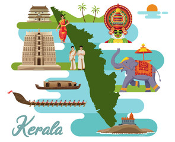

Kerala
Kerala, a state on India's tropical Malabar Coast, has nearly 600km of Arabian Sea shoreline.
It's known for its palm-lined beaches and backwaters, a network of canals. Inland are the Western Ghats, mountains whose slopes support tea, coffee and spice plantations as well as wildlife.
National parks like Eravikulam and Periyar, plus Wayanad and other sanctuaries, are home to elephants, langur monkeys and tigers
Kerala is a unique state containing its own features. The most notable specialties found in the state of Kerala are:
The beautiful geography comprises rainforests, hills, valleys, waterfalls, and beaches such as Kovalam, Varkala, and Kappad, which are the most visited tourist places in Kerala.
The Houseboats floating on the waters of Kerala are as comfortable as a hotel room.
Artforms of Kerala include dance forms ‘Kathakali’ and ‘Theyyam’ and martial art ‘Kalaripayattu.’
The Architecture of Kerala is certainly different from the rest of the country, which attracts tourists to Kerala.
The festivals like Onam and Thrissur Pooram are celebrated in Kerala with enthusiasm.
Ayurvedic treatments done in Kerala are one the ancient practices. People from foreign countries not only visit for tours in Kerala but also for the miraculous treatments.
There is a wide variety of spices found in Kerala.
